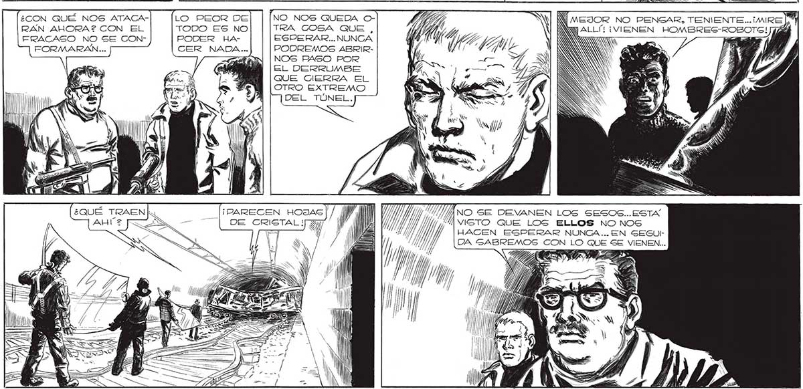
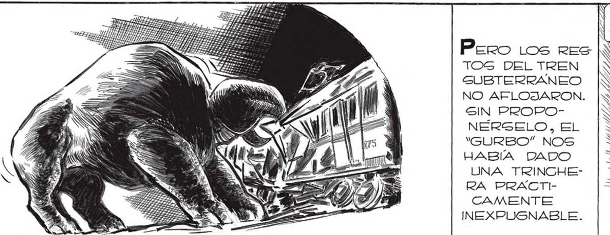

232 ¡EL MISMO “GURBO” ATASCO EL COCHE, CERRANDO EL TÚNEL! ¡NI UNA GRÚA PODRA SACARLO AHORA! > A ¿CON QUÉ NOS ATACARAN AHORA? CON EL FRACASO NO SE CONFORMARÁN... ls Il l Ñ Ñ TEL “GURBO” y SE RETIRA! Pero Los res IN TOS DEL TREN |x GUBTERRANEO NO AFLOJARON. SIN PROPONERGELO, EL “GURBO” NOS HABIA DADO UNA TRINCGHERA PRACTICAMENTE INEXPUGNABLE. A a EN E. "GURBO” CAMBIO DE TÁCTICA CON BREVES BRAMIDOS DE RABIA TRATO DE ARARTAR EL DESTRUIDO COCHE. y NO NOS QUEDA OTRA COSA QUE , ESPERAR... NUNCA PODREMOS ABRIRNOS PASO POR NS EL DERRUMBE hi QUE CIERRA EL OTRO EXTREMO DEL TÚNEL. LO PEOR DE TODO ES NO PODER HACER NADA... E YA ¡PARECEN HOJAS |/ ANN 1) PA DE CRISTAL J yy Ñ SN / //ANO SE DEVANEN LOS SESOS...ESTA “MANISTO QUE LOGS ELLOS NO NOS HACEN ESPERAR NUNCA... EN SEGUI DA GABREMOS CO QU / 77 MN Y LASTIMA NO PODER RETIRARNOS TAN SIEN - NOSOTROS... W N MEJOR NO PENSAR, TENIENTE... N ALL ¡VIENEN HOMBRES-ROB

